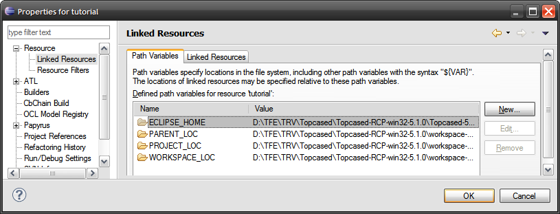

The tag <config> must be defined only once, on top of the template document.
This tag defines the path of the output document, and a list of global parameters for the template.
<output> tag is optional. If not present, the document is generated at template location, with suffix '_generated'
If defined, the syntax is the following:
<config>
<output path=<<Absolute path of the document to be generated>> />
...
</config>
Global parameters can be used to define a relative path.
Example: The generated document will belocated in D:/generatedFile.docx
<config>
<output path='D:/generatedFile.docx' />
...
</config>
Global parameters for the template can be defined, for example to define model path, folders to use or any other static value to be used in template.
Parameters are defined in <config> tag with the following syntax:
<config>
...
<param key=<<Parameter1_key>> value=<<Parameter1_value>> />
<param key=<<Parameter2_key>> value=<<Parameter2_value>> />
<param .../>
</config>
How to access parameters?
Example: creation of global parameters for model folder, model path, and path of a specific package inside model and example of usage in <context> tag.
<config>
<param key='model_path' value='D:/Models/Model_v1/My_model.uml'/>
<param key='UC_package_path' value='/MyUMLModel/UseCases'/>
</config>
<context model='${model_path}' element='${UC_package_path}'/>
Some <param> are pre-defined in Gendoc and can be used directly in the template.
${input} is the name of the input template document
Example:
<param key='generation_folder' value='D:/Generated'/>
<output path='${generation_folder}/${input}-generated.docx' />
If the input document is named template1.docx, the result file is named template1-generated.docx.
The following variables are also ready to be used by default:
Example:
<output path='${input_directory}/${input}-generated-${date}.docx' />
Result file example: template-generated-2014-08-02-093707.docx
It is also possible to use variables defined in project of the document.
From the project on Project Explorer view, right click > Properties > Resource > Linked Resources > Path Variables
Predefined variables or user variables can be used in the template. They are NOT case-sensitive.
Example :
<output path='${project_loc}/${input}-generated.docx' />
As you may need to put many additional variables inside your project, in order to make the config tag more readable and more reusable, you can put the variables in a file with .properties extension. To access the content of this file you should add the <properties> tag in the following manner:
Example :
<properties path='${input_directory}/vars.properties' />
Where the vars.properties may have the content like this:
Example :
output_generation=${workspace_loc}/generated-${date}.docx
input_model_prop=${input}/model.uml
image_test=${project_loc}/company_logo.jpg
These variables can be used in Gendoc tags :
Example :
<output path='${output_generation}' />
You can use CDO URIs in context tags
Example :
<context model=’cdo.net4j.tcp://localhost:2036/repository/resource?transactional=true’ element=’{0}’/>